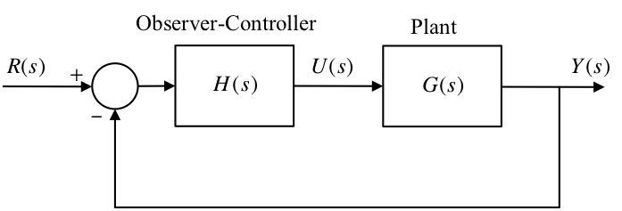

---
redirect_from:
  - "/08/4/observer-controller"
interact_link: content/08/4/observer_controller.ipynb
kernel_name: matlab
kernel_path: content/08/4
has_widgets: false
title: |-
  Combined Observer and Controller
pagenum: 39
prev_page:
  url: /08/3/observers.html
next_page:
  url: /01/mattf.html
suffix: .ipynb
search: mathbf s bf x frac hat left right m u y observer l b alpha det r bk e km controller eqnarray lc k begin end error h combined therefore array poles system c states input tracking tf alphaz reference alphae tilde equivalent plant dynamics f classical driven alphap separation principle normal position closed loop control not compensator dot difference between overall feedback work before desired pictures fig png d dt where taking laplace transforms case lk g here introducing previous matrix alphac set ignoring ics underbrace introduced sense zeros used because does ce square characteristic designed positions using instead

comment: "***PROGRAMMATICALLY GENERATED, DO NOT EDIT. SEE ORIGINAL FILES IN /content***"
---

    <main class="jupyter-page">
    <div id="page-info"><div id="page-title">Combined Observer and Controller</div>
</div>
    <div class="jb_cell">

<div class="cell border-box-sizing text_cell rendered"><div class="inner_cell">
<div class="text_cell_render border-box-sizing rendered_html">
<h1 id="Combined-Observer-and-Controller">Combined Observer and Controller<a class="anchor-link" href="#Combined-Observer-and-Controller"> </a></h1><ul>
<li><p>The observer states can be used to provide feedback control when the
plant's own states are not available.</p>
</li>
<li><p>The combined observer-controller is equivalent to a classical
compensator.</p>
</li>
<li><p>The combined system has twice as many states as the plant because of
the duplicated states of the observer.</p>
</li>
<li><p><em>Question to be answered here</em>: how does the whole thing behave?</p>
</li>
</ul>

</div>
</div>
</div>
</div>

<div class="jb_cell">

<div class="cell border-box-sizing text_cell rendered"><div class="inner_cell">
<div class="text_cell_render border-box-sizing rendered_html">
<h2 id="Content">Content<a class="anchor-link" href="#Content"> </a></h2><ul>
<li><p>Dynamics of the combined controller-observer system</p>
<ol>
<li><p>Separation principle</p>
</li>
<li><p>Equivalent classical controller</p>
</li>
</ol>
</li>
</ul>
<ul>
<li><p>Introducing the reference input</p>
<ol>
<li><p>The normal position</p>
</li>
<li><p>Observer driven by the tracking error</p>
</li>
</ol>
</li>
</ul>

</div>
</div>
</div>
</div>

<div class="jb_cell">

<div class="cell border-box-sizing text_cell rendered"><div class="inner_cell">
<div class="text_cell_render border-box-sizing rendered_html">
<h2 id="Dynamics-of-the-combined-system">Dynamics of the combined system<a class="anchor-link" href="#Dynamics-of-the-combined-system"> </a></h2><p><strong>The control</strong>: $u=r-\mathbf{K}\hat{\mathbf{x}}$</p>
<p><strong>The plant dynamics</strong>: $\dot{\mathbf{x}}=\mathbf{A}\mathbf{x}+\mathbf{B}(r-\mathbf{K}\hat{\mathbf{x}})$</p>
<p><strong>Error</strong>:  $\mathbf{e}=\mathbf{x}-\hat{\mathbf{x}}$ so $\hat{\mathbf{x}}=\mathbf{x}-\mathbf{e}$ therefore</p>
$$\begin{eqnarray*}
                \dot{\mathbf{x}} &amp; = &amp; \mathbf{A}\mathbf{x}+\mathbf{B}r-\mathbf{BK}(\mathbf{x}-\mathbf{e}) \\
                                 &amp; = &amp; (\mathbf{A}-\mathbf{BK})\mathbf{x}+\mathbf{BK}\mathbf{e}-\mathbf{B}r
        \end{eqnarray*}$$<p>From previous work the error dynamics are:</p>
$$\dot{\mathbf{e}} = (\mathbf{A}-\mathbf{LC})\mathbf{e}$$<p></p>
<p>Therefore the
dynamics of the combined system is:</p>
$$\left[ {\begin{array}{*{20}c}
   {\dot{\mathbf{x}}}  \\
   {\dot{\mathbf{e}}}  \\
\end{array}} \right] = \left[ {\begin{array}{*{20}c}
   {\left( \bf{A} - \bf{BK} \right)} &amp; \bf{BK}  \\
   {\bf{0}} &amp; {\left( {\bf{A} - {\bf{LC}}} \right)}  \\
\end{array}} \right]\left[ {\begin{array}{*{20}c}
   {\bf{x}}  \\
   {\bf{e}}  \\
\end{array}} \right] + \left[ {\begin{array}{*{20}c}
   {\bf{B}}  \\
   {\bf{0}}  \\
\end{array}} \right]r$$<p>The eigenvalues or poles of the combined system are the roots of the CE:</p>
$$\begin{eqnarray*}
    \det \left[ {s{\bf{I}}_{2n}  - \left[ {\begin{array}{*{20}c}
       {\left( \bf{A} - \bf{BK} \right)} &amp; {\bf{BK}}  \\
       {\bf{0}} &amp; {\left( \bf{A} - \bf{LC} \right)}  \\
    \end{array}} \right]} \right] &amp; = &amp;  0 \\
    \det \left[ {\begin{array}{*{20}c}
       {\left[ {s{\bf{I}} - \left( \bf{A} - \bf{BK} \right)} \right]} &amp; { - {\bf{BK}}}  \\
       {\bf{0}} &amp; {\left[ {s{\bf{I}} - \left( \bf{A} - \bf{LC} \right)} \right]}  \\
    \end{array}} \right] &amp; = &amp; 0\end{eqnarray*}$$<p>The matrix is block triangular with square matrices on the diagonal.
Therefore:</p>
$$\det \left[ {s{\bf{I}} - \left( \bf{A} - \bf{BK} \right)} \right]\det\left[ s\bf{I} - \left( \bf{A} - \bf{LC} \right) \right] = 0$$$$\alpha_c(s)\alpha_e(s) = 0$$<p>These are the combined characteristic polynomials of the controller and
the observer.</p>

</div>
</div>
</div>
</div>

<div class="jb_cell">

<div class="cell border-box-sizing text_cell rendered"><div class="inner_cell">
<div class="text_cell_render border-box-sizing rendered_html">
<h3 id="Separation-Principle">Separation Principle<a class="anchor-link" href="#Separation-Principle"> </a></h3><p>From the above work, we can conclude that the set of poles of the
combined observer-controller system is the union of the set of closed
loop controller poles and the set of observer poles.</p>
<p>The controller matrix $\mathbf{K}$ is designed as before, as if the real
plant states are going to be used for the feedback. This fixes the
positions of the controller poles into the desired positions.</p>
<p>Then, quite independently, the matrix $\mathbf{L}$ is designed as before
to fix the observer poles as required.</p>
<p>Using the observer states for the control feedback instead of the plant
states does not affect the closed loop poles.</p>
<p>This is a fortunate situation and is known as the <strong>separation
principle</strong>. The problems of controller design and observer design have
been separated.</p>

</div>
</div>
</div>
</div>

<div class="jb_cell">

<div class="cell border-box-sizing text_cell rendered"><div class="inner_cell">
<div class="text_cell_render border-box-sizing rendered_html">
<h3 id="The-Equivalent-Classical-Compensator">The Equivalent Classical Compensator<a class="anchor-link" href="#The-Equivalent-Classical-Compensator"> </a></h3><ul>
<li><p>We shall determine the classical compensator TF which is equivalent
to the combined observer-controller.</p>
</li>
<li><p>This is simpler to do if we remove the reference input, for the time
being.</p>
</li>
</ul>
<p></p>
<p>Setting the reference input $r = 0$ gives:</p>
$$\frac{d\hat{\mathbf{x}}}{dt}=(\mathbf{A}-\mathbf{LC})\hat{\mathbf{x}}+ \mathbf{B}u+\mathbf{L}y$$<p>where $u=-\mathbf{K}\hat{\mathbf{x}}$ therefore</p>
$$\frac{d\hat{\mathbf{x}}}{dt}=(\mathbf{A}-\mathbf{LC})\hat{\mathbf{x}} - \mathbf{BK}\hat{\mathbf{x}}+\mathbf{L}y$$<p>or</p>
$$\frac{d\hat{\mathbf{x}}}{dt}=(\mathbf{A} - \mathbf{LC} - \mathbf{BK})\hat{\mathbf{x}} + \mathbf{L}y$$<p>Taking Laplace transforms, ignoring ICs: Taking Laplace transforms,
ignoring ICs:</p>
$$\begin{eqnarray*}
s\hat{\mathbf{X}}(s) &amp; = &amp; (\mathbf{A} - \mathbf{LC} - \mathbf{BK})\hat{\mathbf{X}}(s) + \mathbf{L}Y(s) \\  
\underbrace {(s{\bf{I}} - {\bf{A}} + {\bf{BK}} + {\bf{LC}})}_{\bf{M + BK}}{\bf{\hat X}}(s) &amp; = &amp; {\bf{L}}Y(s) \\
\hat{\mathbf{X}}(s) &amp; = &amp; (\mathbf{M}+\mathbf{BK})^{-1}{\bf{L}}Y(s)\end{eqnarray*}$$<p>where $\mathbf{M}=s\mathbf{I}-\mathbf{A}+\mathbf{LC}$.</p>
$$U(s)=-\mathbf{K}\hat{\mathbf{X}}(s)=-\mathbf{K}(\mathbf{M}+\mathbf{BK})^{-1}\mathbf{L}Y(s)$$<p>therefore the compensator TF is:</p>
$$H(s)=-\frac{U(s)}{Y(s)}=\mathbf{K}(\mathbf{M}+\mathbf{BK})^{-1}\mathbf{L}$$<p>Alternatively, since</p>
$$s{\bf{\hat X}}(s) =  {\bf{A\hat X}}(s) + {\bf{B}}U(s) + {\bf{L}}\left( {Y(s) - {\bf{C\hat X}}}(s) \right)$$<p>then,</p>
$$\left( {s{\bf{I}} - {\bf{A}} + {\bf{LC}}} \right){\bf{\hat X}}(s) = {\bf{B}}U(s) + {\bf{L}}Y(s)$$<p>or,</p>
$${\bf{\hat X}}(s) = {\bf{M}}^{ - 1} {\bf{B}}U(s) + {\bf{M}}^{ - 1} {\bf{L}}Y(s)$$<p>Now $$U(s) =  - {\bf{K\hat X}}(s)$$</p>
<p>so</p>
$$U (s) =   - {\bf{K}}\left( {\bf{M}^{ - 1} {\bf{B}}U(s) + {\bf{M}}^{ - 1} {\bf{L}}Y(s)} \right)$$$$\left( {1 + {\bf{KM}}^{ - 1} {\bf{B}}} \right)U(s) =  - {\bf{KM}}^{ - 1} {\bf{L}}Y(s)$$$$H\left( s \right) =  - \frac{U(s)}{Y(s)} = \frac{\bf{KM}^{ - 1} {\bf{L}}}{1 + \bf{KM}}^{ - 1} {\bf{B}}$$
</div>
</div>
</div>
</div>

<div class="jb_cell">

<div class="cell border-box-sizing text_cell rendered"><div class="inner_cell">
<div class="text_cell_render border-box-sizing rendered_html">
<h2 id="Introducing-the-Reference-Input">Introducing the Reference Input<a class="anchor-link" href="#Introducing-the-Reference-Input"> </a></h2><p>Two cases considered:</p>
<ol>
<li><p>The Normal Position</p>
<ul>
<li>The reference input is introduced as
$u=r-\mathbf{K}\hat{\mathbf{x}}$.</li>
</ul>
</li>
<li><p>Observer driven by the tracking error</p>
<ul>
<li><p>Sense the tracking error and use this to control the system.</p>
</li>
<li><p>The tracking error is the difference between the desired and
actual outputs $\tilde e =  - r + y$</p>
</li>
</ul>
<p>Systems in each case have different properties.</p>
</li>
</ol>

</div>
</div>
</div>
</div>

<div class="jb_cell">

<div class="cell border-box-sizing text_cell rendered"><div class="inner_cell">
<div class="text_cell_render border-box-sizing rendered_html">
<h3 id="&#160;1.-The-Normal-Position">&#160;1. The Normal Position<a class="anchor-link" href="#&#160;1.-The-Normal-Position"> </a></h3><p>In this case the reference input $r$ is introduced as before:
$u=r-\mathbf{K}\hat{\mathbf{x}}$. This results in an equivalent
classical system with the structure shown below:</p>
<p></p>
<h4 id="Finding-$F(s)$-and-$H(s)$">Finding $F(s)$ and $H(s)$<a class="anchor-link" href="#Finding-$F(s)$-and-$H(s)$"> </a></h4><p>For the observer we have:</p>
$$\frac{d\hat{\mathbf{x}}}{dt} = \mathbf{A}\hat{\mathbf{x}}+\mathbf{B}u-\mathbf{L}(\mathbf{C}\hat{\mathbf{x}} - y)$$<p>Taking Laplace transforms ignoring ICs</p>
$$\begin{eqnarray*}
s\hat{\mathbf{X}}(s) &amp; = &amp; \mathbf{A}\hat{\mathbf{X}} - \mathbf{B}U - \mathbf{LC}\hat{\mathbf{X}} + \mathbf{L}Y(s) \\   
\underbrace {(s{\bf{I}} - {\bf{A}} + {\bf{LC}})}_{\bf{M}}{\bf{\hat X}} &amp; = &amp; {\bf B}U + {\bf{L}}Y(s) \\
\hat{\mathbf{X}} &amp; = &amp; \mathbf{M}^{-1}\mathbf{B}U + \mathbf{M}^{-1}{\bf{L}}Y\end{eqnarray*}$$<p>For the controller we have:</p>
$$u = r - \mathbf{K}\hat{\mathbf{x}}$$<p>Taking Laplace transforms</p>
$$U = R - \mathbf{K}\hat{\mathbf{X}}$$<p>Therefore, for the combined observer-controller</p>
$$U=R-\mathbf{K}\left(\mathbf{M}^{-1}\mathbf{B}U + \mathbf{M}^{-1}{\bf{L}}Y\right)$$<p>Re-arranging:</p>
$$\left(\mathbf{KM}^{-1}\mathbf{B}+1\right)U=R-\mathbf{KM}^{-1}\mathbf{L}Y$$<p>therefore,</p>
$$U=\frac{1}{\mathbf{KM}^{-1}\mathbf{B}+1}R-\frac{\mathbf{KM}^{-1}\mathbf{L}}{\mathbf{KM}^{-1}\mathbf{B}+1}Y$$<p>Comparing with:</p>
$$U=F(s)R-H(s)Y$$$$F(s) = \frac{1}{\mathbf{KM}^{-1}\mathbf{B}+1}$$<p>and</p>
$$H(s) = \frac{\mathbf{KM}^{-1}\mathbf{L}}{\mathbf{KM}^{-1}\mathbf{B}+1}$$<h4 id="A-useful-theorem">A useful theorem<a class="anchor-link" href="#A-useful-theorem"> </a></h4><p>If $\mathbf{M}$ is square and $\mathbf{V}$ is a row vector and
$\mathbf{W}$ is a column vector then,</p>
$$\mathbf{VM}^{-1}\mathbf{W}=\frac{\det\left(\mathbf{M}+\mathbf{WV}\right)}{\det{\mathbf{M}}}-1$$
</div>
</div>
</div>
</div>

<div class="jb_cell">

<div class="cell border-box-sizing text_cell rendered"><div class="inner_cell">
<div class="text_cell_render border-box-sizing rendered_html">
<h4 id="Zeros-and-Poles-of-$F(s)$-and-$H(s)$">Zeros and Poles of $F(s)$ and $H(s)$<a class="anchor-link" href="#Zeros-and-Poles-of-$F(s)$-and-$H(s)$"> </a></h4><p>Applying the theorem:</p>
$$\mathbf{KM}^{-1}\mathbf{B}+1=\frac{\det\left(\mathbf{M}+\mathbf{BK}\right)}{\det{\mathbf{M}}}$$<p>therefore,</p>
$$F(s) = \frac{\det\mathbf{M}}{\det\left(\mathbf{M}+\mathbf{BK}\right)}$$<p>From previous work,</p>
$$\det\mathbf{M}=\det\left(s\mathbf{I}-\mathbf{A}=\mathbf{LC}\right)=\alpha_e(s)$$<p>where $\alpha_e(s)=0$ is the characteristic equation of the observer.</p>
<p>Let $\det\left(\mathbf{M}+\mathbf{BK}\right)=\alpha_1(s)$ then,</p>
$$F(s)=\frac{\alpha_e(s)}{\alpha_1(s)}.$$<p>Similarly for $H(s)$:</p>
$$H\left( s \right) = \frac{\left( {\frac{\det \left( \bf{M} + \bf{LK} \right)}{\det \bf{M}} - 1} \right)}{\frac{\det \left( \bf{M} + \bf{BK} \right)}{\det \bf{M}}} = \frac{\det \left( \bf{M} + \bf{LK} \right) - \det \bf{M}}{\det \left( \bf{M} + \bf{BK} \right)}$$<p>Letting $\det\left(\mathbf{M}+\mathbf{LK}\right)-\det\mathbf{M}=\alpha_2(s)$ then,</p>
$$H(s)\frac{\alpha_2(s)}{\alpha_1(s)}.$$
</div>
</div>
</div>
</div>

<div class="jb_cell">

<div class="cell border-box-sizing text_cell rendered"><div class="inner_cell">
<div class="text_cell_render border-box-sizing rendered_html">
<h4 id="The-Overall-Closed-Loop-TF">The Overall Closed Loop TF<a class="anchor-link" href="#The-Overall-Closed-Loop-TF"> </a></h4>$$\frac{Y(s)}{R(s)}=F(s)=\frac{G(s)}{1+G(s)H(s)}$$<p></p>
<p>Let the plant TF be:</p>
$$\frac{\alpha_z(s)}{\alpha_p(s)}$$<p></p>
<p>therefore,</p>
$$\begin{eqnarray*}
    \frac{Y(s)}{R(s)} &amp;=&amp; \frac{\alpha_e(s)}{\alpha_1(s)}\frac{\frac{\alpha_z(s)}{\alpha_p(s)}}{1+\frac{\alpha_z(s)}{\alpha_p(s)}\frac{\alpha_2(s)}{\alpha_1(s)}} \\
    \frac{Y(s)}{R(s)} &amp;=&amp; \frac{\alpha_e(s)\alpha_z(s)}{\alpha_p(s)\alpha_1(s)+\alpha_z(s)\alpha_2(s)}\end{eqnarray*}$$<p>We know from previous work that the denominator, corresponding to the
closed loop CE of the overall system must, from the separation
principle, be equivalent to: $$\alpha_e(s)\alpha_c(s)$$ therefore,</p>
$$\frac{Y(s)}{R(s)} = \frac{\alpha _e (s)\alpha _z (s)}{\alpha _e (s)\alpha _c (s)} = \frac{\alpha _z (s)}{\alpha _c (s)}$$<ul>
<li><p>Notice here how the input TF $F(s)$ contains as its zeros all the
poles of the observer given by $\alpha_e(s)$.</p>
</li>
<li><p>Because of the separation principle, these are also half of the
poles of the overall closed loop TF.</p>
</li>
<li><p>The pole-zero cancellation results in the final TF having just the
plant zeros and the controller poles.</p>
</li>
<li><p>Thus we can say that, using the observer states for the feedback,
instead of the unavailable plant states, has not affected the closed
loop TF.</p>
</li>
<li><p>This is not the case when the reference input is introduced
elsewhere.</p>
</li>
</ul>

</div>
</div>
</div>
</div>

<div class="jb_cell">

<div class="cell border-box-sizing text_cell rendered"><div class="inner_cell">
<div class="text_cell_render border-box-sizing rendered_html">
<h3 id="2.-Observer-Driven-by-the-Tracking-Error">2. Observer Driven by the Tracking Error<a class="anchor-link" href="#2.-Observer-Driven-by-the-Tracking-Error"> </a></h3><p>Sometimes it is desired to sense the tracking error and use this to
control the system.</p>
<p>The tracking error is the difference between the desired and actual
outputs,</p>
$$\tilde e =  - r + y$$<p>Some sensors can only measure a difference between two measurands. eg a
thermocouple can only sense the temperature difference between its hot
and cold junctions.</p>
<p></p>
<p>Redraw:</p>
<p></p>
<p>In this configuration the observer is driven by: $$\tilde E =  Y + R$$
Hence the observer dynamics are:</p>
$$s\hat{\mathbf{X}}=\mathbf{A}\hat{\mathbf{X}}+\mathbf{B}U+\mathbf{L}(\tilde E - \mathbf{C}\hat{\mathbf{X}})$$<p>therefore,</p>
$$\begin{eqnarray*}
    \underbrace {\left( {s{\bf{I}} - {\bf{A}} + {\bf{LC}}} \right)}_{\bf{M}}{\bf{\hat X}} &amp; = &amp; {\bf{B}}U + {\bf{L}}\tilde E \\
    {\bf{\hat X}} &amp; = &amp; {\bf{M}}^{ - 1} {\bf{B}}U + {\bf{M}}^{ - 1} {\bf{L}}\tilde E\end{eqnarray*}$$<p>Now $U=-\mathbf{K}\hat{\mathbf{X}}$, therefore $$\begin{eqnarray*}
    U &amp; = &amp;  - \bf{KM}^{ - 1} {\bf{B}}U - {\bf{KM}}^{ - 1} {\bf{L}}\tilde E \\
    U &amp; = &amp;  - \frac{\bf{KM}^{ - 1} {\bf{L}}}{1 + {\bf{KM}}^{ - 1} {\bf{B}}}\tilde E \\
    H\left( s \right) &amp; = &amp;  - \frac{U}{\tilde E} = \frac{\bf{KM}^{ - 1} {\bf{L}}}{1 + {\bf{KM}}^{ - 1} {\bf{B}}}\end{eqnarray*}$$</p>
<p>Here $H(s)$ is the same as before:</p>
$$\frac{\alpha_2(s)}{\alpha_1(s)}$$<p>where $\alpha_1(s)=\det(\mathbf{M}+\mathbf{BK})$ and $\alpha_2(s)=\det(\mathbf{M}+\mathbf{LK})-\det{M}$.</p>
<p>The overall TF is:</p>
$$\begin{eqnarray*}
    \frac{Y(s)}{R(s)} &amp;=&amp; \frac{G(s)}{1+G(s)H(s)}= \frac{\frac{\alpha_z(s)}{\alpha_p(s)}\times\frac{\alpha_2(s)}{\alpha_1(s)}}{1+\frac{\alpha_z(s)}{\alpha_p(s)}\times\frac{\alpha_2(s)}{\alpha_1(s)}} \\
    \frac{Y(s)}{R(s)} &amp;=&amp; \frac{\alpha_z(s)\alpha_2(s)}{\alpha_p(s)\alpha_1(s)+\alpha_z(s)\alpha_2(s)}=\frac{\alpha_z\alpha_2}{\alpha_c\alpha_e}\end{eqnarray*}$$<ul>
<li><p>In this case we see that the overall TF contains the poles of the
observer as well as the controller.</p>
</li>
<li><p>Whereas in the normal position changes in the reference input do not
excite the error dynamics of the observer, in this configuration
they do.</p>
</li>
<li><p>As a result the difference between the observer and the plant states
is affected during operation and take further time to settle down.</p>
</li>
</ul>

</div>
</div>
</div>
</div>

<div class="jb_cell">

<div class="cell border-box-sizing text_cell rendered"><div class="inner_cell">
<div class="text_cell_render border-box-sizing rendered_html">
<h2 id="Summary">Summary<a class="anchor-link" href="#Summary"> </a></h2><ul>
<li><p>Dynamics of the combined controller-observer system</p>
<ol>
<li><p>Separation principle</p>
</li>
<li><p>Equivalent classical controller</p>
</li>
</ol>
</li>
</ul>
<ul>
<li><p>Introducing the reference input</p>
<ol>
<li><p>The normal position</p>
</li>
<li><p>Observer driven by the tracking error</p>
</li>
</ol>
</li>
</ul>

</div>
</div>
</div>
</div>

 


    </main>
    